A human cell makes more than 10 000 different proteins, almost all of them on ribosomes in the cytosol. Each one must end up in the right place: the nucleus, the ER, a mitochondrion, a peroxisome, a lysosome, the plasma membrane or outside the cell. Today: how a protein knows where to go.
After this lecture you can:
explain how sorting signals in a protein’s sequence work like zip codes, and how we show that a signal is necessary and sufficient;
name the three ways in: gated (nuclear pores), transmembrane (ER, mitochondria, peroxisomes) and vesicular (from the ER onwards);
describe nuclear import and export: the NLS, importins, exportins and the Ran gradient;
describe import into mitochondria (TOM and TIM) and peroxisomes (PTS1);
predict where a protein with a given set of signals ends up, and explain how selinexor and NLS-tagged Cas9 use these rules.
The question: one cytosol, many addresses
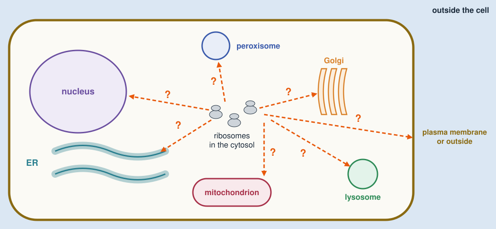
Almost every protein is made on a ribosome in the cytosol. Only 13 human proteins are made inside mitochondria.
The ribosome does not know where the protein should go. The protein carries its own address.
How is the address written? Who reads it? And how does a protein cross a membrane that ions cannot cross?
Recap: two sides of every membrane
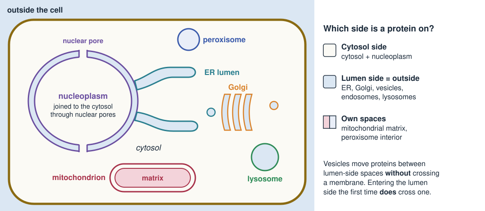
Recap from the cell tour. The nucleoplasm is joined to the cytosol through pores: it is the same space.
The ER, Golgi, vesicles and lysosomes are on the lumen side, which is topologically the outside of the cell.
Mitochondria and peroxisomes are spaces of their own: their proteins come from the cytosol.
Sorting signals are zip codes
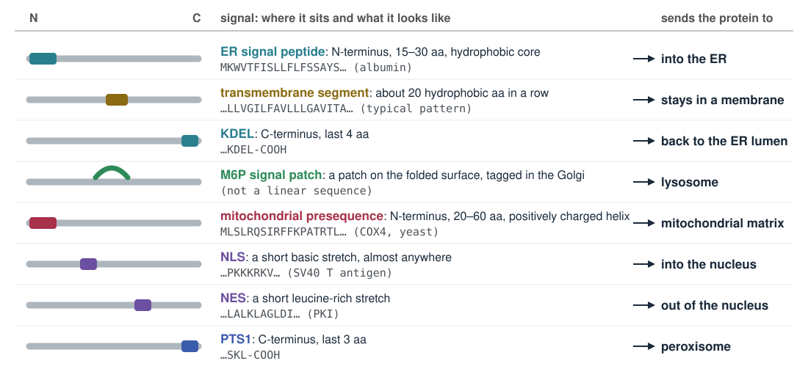
Most signals are a short stretch of amino acids. The pattern matters more than the exact sequence. Many are cut off after use; KDEL, NLS and PTS1 stay.
How do we know? A signal is necessary and sufficient
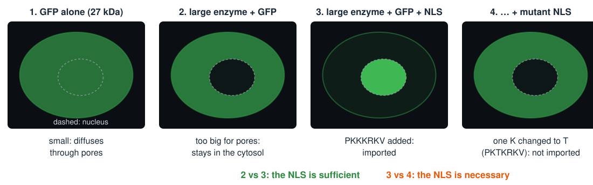
Sufficient: add the signal to an unrelated protein and it moves to the new place.
Necessary: mutate the signal (one Lys → Thr) and the protein stays out.
Same logic for the ER signal peptide (Günter Blobel, Nobel Prize 1999) and every other signal. Today the readout is usually a GFP fusion in living cells.
The three ways in
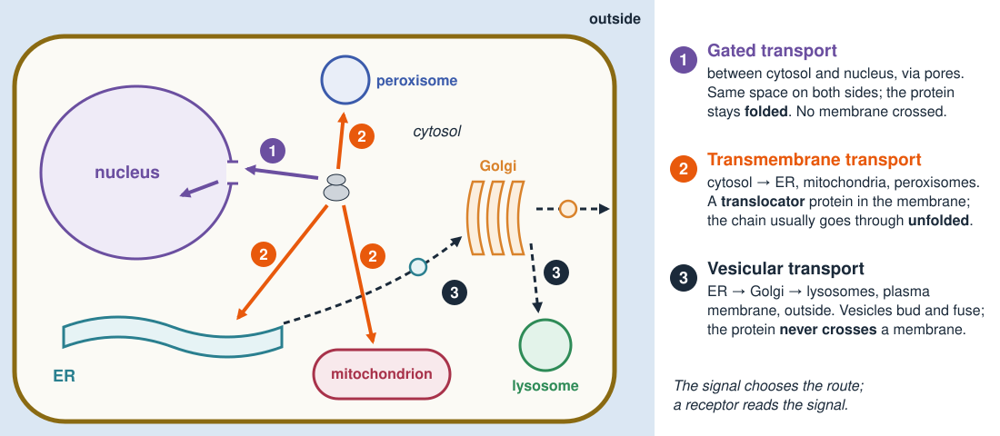
Which machine is used depends on the topology: same space (gated), into a new space from the cytosol (transmembrane), or between lumen-side spaces (vesicular).
Gated transport: the nuclear pore complex
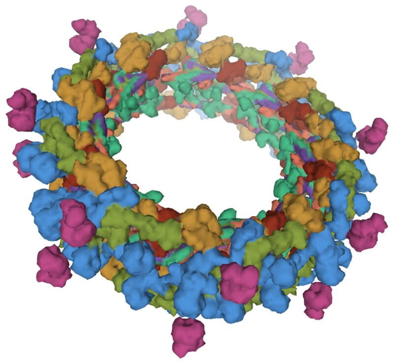
Human nuclear pore complex, scaffold rings (cryo-electron tomography and modelling, PDB 5IJO).
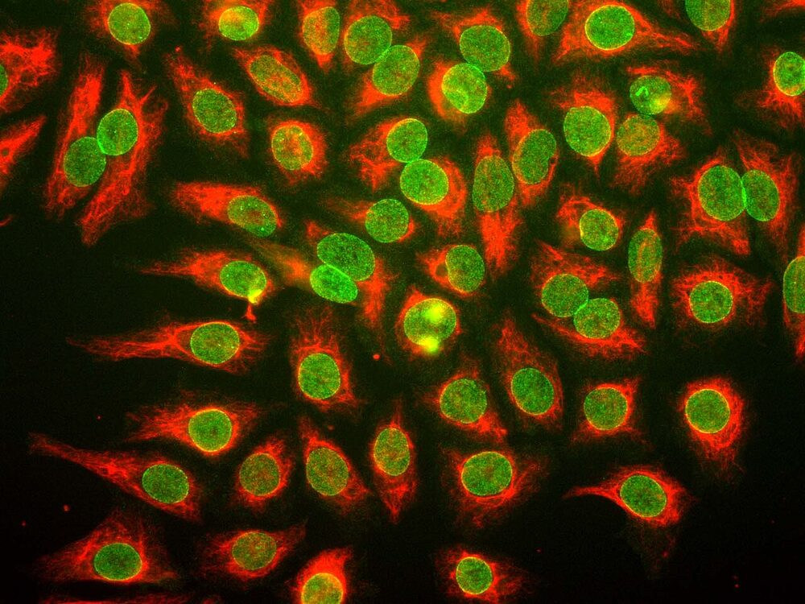
HeLa cells: a pore protein (green) outlines every nucleus; vimentin filaments (red).
About 120 MDa, ~30 different proteins (nucleoporins), each in 8 or more copies; ~3000 pores per nucleus.
The central channel is filled with FG repeats, flexible chains rich in Phe-Gly: a sieve. Proteins below ~40 kDa diffuse; larger ones need a carrier that binds the FG repeats.
Nuclear import: NLS, importins and Ran
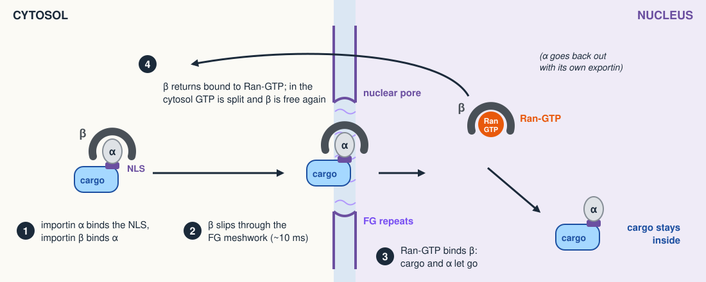
Importin α reads the NLS; importin β carries the complex through the FG meshwork. The cargo stays folded.
In the nucleus, Ran-GTP binds importin β and the cargo is released. Ran-GTP is (almost) only in the nucleus, so import goes one way.
The Ran gradient gives direction; export is the mirror image
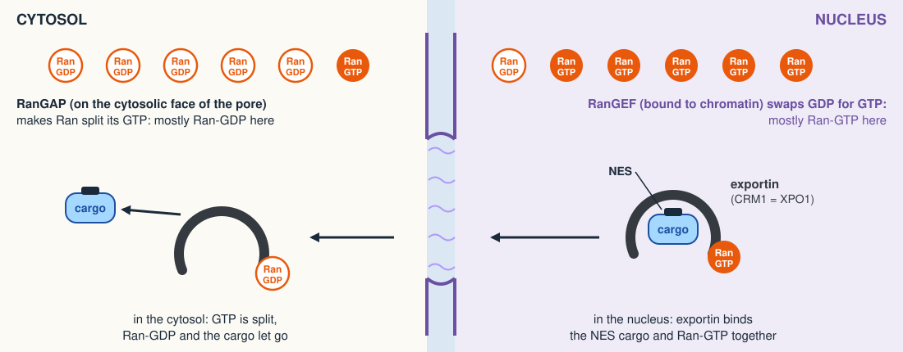
RanGEF sits on chromatin: Ran-GTP is made in the nucleus. RanGAP is in the cytosol: Ran-GTP is turned into Ran-GDP there.
Exportins do the opposite of importins: they bind cargo with a nuclear export signal (NES)together with Ran-GTP, and let go in the cytosol.
The energy comes from GTP hydrolysis by Ran, not from the pore.
Transmembrane transport into the ER: the first fork
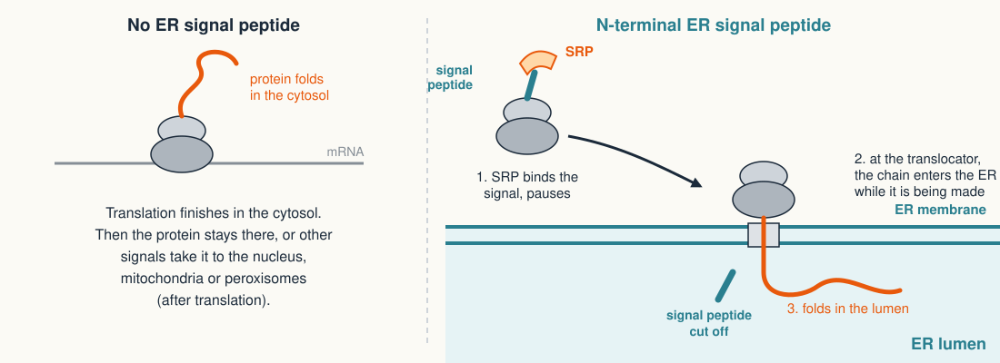
An N-terminal signal peptide is recognised by SRP as soon as it leaves the ribosome. The chain enters the ER while it is made (co-translational).
A transmembrane segment stops the transfer: the protein stays in the ER membrane. Details: the ER lecture.
Every protein of the ER, Golgi, lysosomes, plasma membrane and every secreted protein starts here.
Transmembrane transport into mitochondria: TOM and TIM
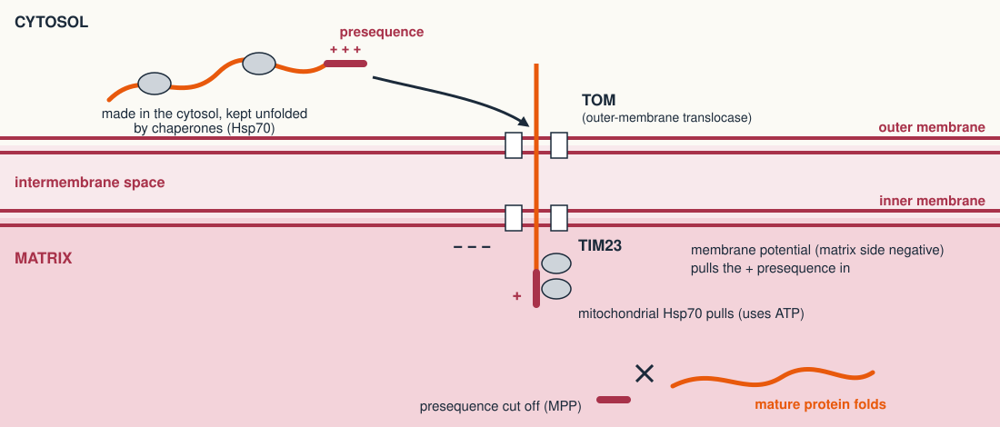
Made in the cytosol, then imported (post-translational). Chaperones keep the chain unfolded.
TOM reads the presequence; the chain passes TOM and TIM23 at a contact point. The membrane potential pulls the positive presequence; mitochondrial Hsp70 pulls the rest using ATP.
A hydrophobic segment after the presequence can stop the chain in TIM23: an inner-membrane protein.
How do we know? Import into isolated mitochondria
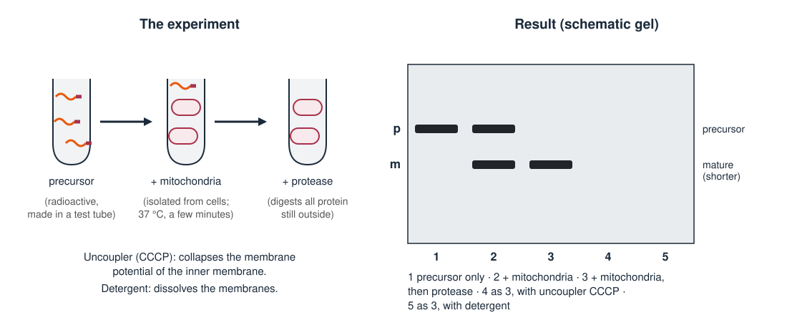
Lane 3: the shorter, mature protein is protected from the protease: it is inside, and the presequence was cut off.
Lane 4: without a membrane potential (uncoupler CCCP) nothing gets in. Lane 5: with the membranes dissolved, protease reaches everything: a control.
Peroxisomes: import of folded proteins
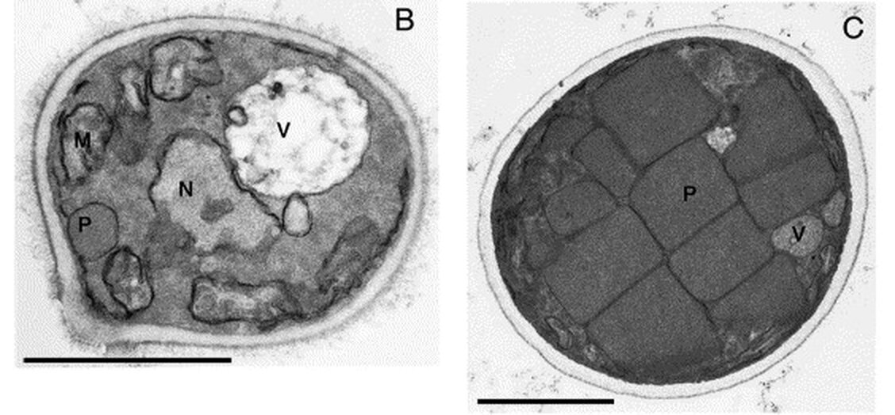
Yeast (Hansenula polymorpha) by electron microscopy. B: grown on glucose, a few small peroxisomes (P). C: grown on methanol, the cell is filled with large peroxisomes. N nucleus, M mitochondrion, V vacuole.
One membrane, no DNA, no ribosomes. Enzymes for oxidation of very long fatty acids, H₂O₂ and its breakdown by catalase, plasmalogen lipids.
PTS1 (C-terminal -SKL) is read by the receptor PEX5 in the cytosol.
Unusual: proteins are imported fully folded, even as oligomers. PEX5 enters with its cargo and is recycled.
Without working PEX genes, no import: Zellweger syndrome (the organelles lecture).
Vesicular transport: signals read inside the ER and Golgi
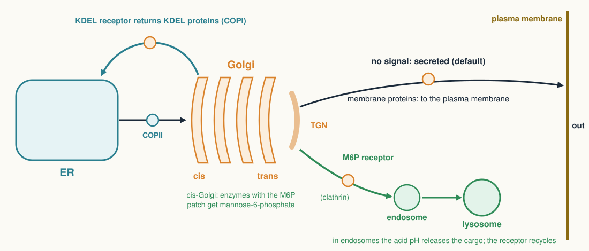
Default: a soluble protein in the ER lumen with no further signal is secreted; a membrane protein goes to the plasma membrane.
KDEL: ER proteins (e.g. the chaperone BiP) leak to the Golgi and are brought back by the KDEL receptor: retrieval, not retention.
M6P: a mannose-6-phosphate tag is added to lysosomal enzymes in the cis-Golgi; the M6P receptor sends them to lysosomes. Lose the tag (I-cell disease): the enzymes are secreted instead.
When a protein has several signals: the order of reading
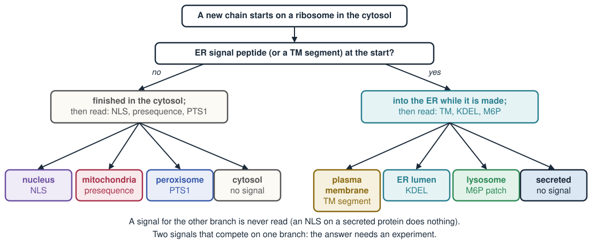
The first fork (ER or not) is made during translation. After that, only signals on the same side of the membrane as their receptor can be read. Try it:Demo: zip-code game
Why it matters: selinexor blocks nuclear export
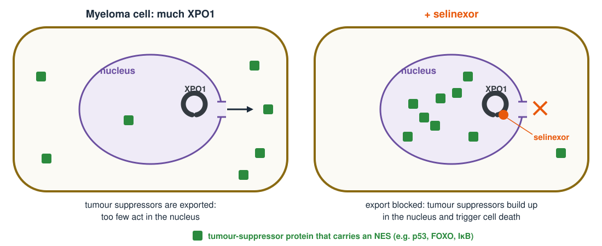
Many cancer cells, including multiple myeloma, make too much XPO1. Tumour suppressors such as p53 are exported and cannot act in the nucleus.
Selinexor binds XPO1 covalently (to a cysteine in the NES-binding groove). Export stops; tumour suppressors build up in the nucleus; the cancer cell dies. Approved 2019 for myeloma, with dexamethasone.
Why it matters: NLS tags in CRISPR and gene therapy
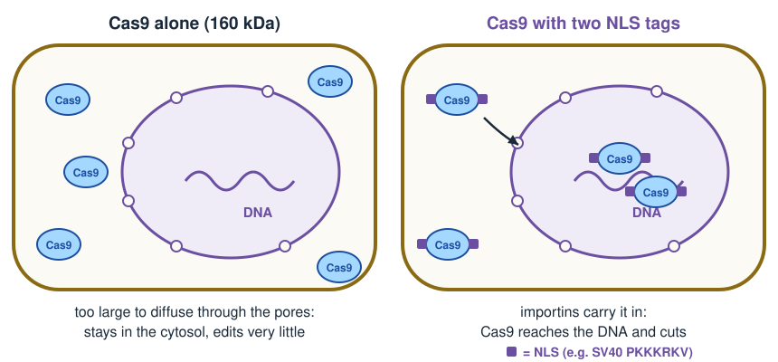
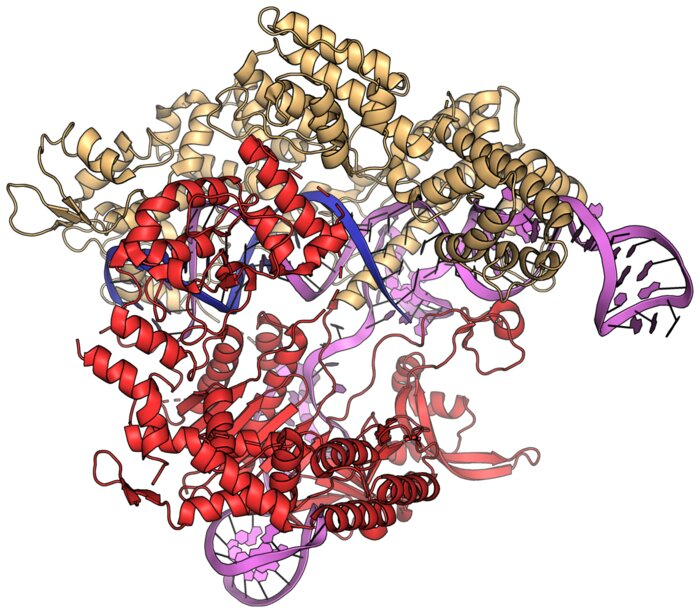
Cas9 with guide RNA (purple) and target DNA (blue); PDB 4OO8.
Cas9 (from bacteria, 160 kDa) has no NLS and is far too big to diffuse through a pore. Every CRISPR tool adds one or two NLS tags (often the SV40 NLS from the GFP experiment).
Gene therapy has the same problem: DNA delivered to a non-dividing cell (neuron, liver cell) must get through the pores. Dividing cells get it when the envelope breaks down in mitosis.
Summary
Sorting signals are zip codes written in the protein: short patterns (signal peptide, presequence, NLS, NES, PTS1, KDEL) or a patch (M6P). Receptors read them; fusion and mutation experiments show a signal is sufficient and necessary.
Three ways in, set by topology: gated (nuclear pores, folded protein), transmembrane (a translocator: ER, mitochondria, peroxisomes), vesicular (from the ER onwards, no membrane crossed).
Nuclear transport: importins and exportins pass the FG meshwork; the Ran-GTP gradient (GEF in the nucleus, GAP in the cytosol) makes it one-way.
Mitochondria import unfolded proteins through TOM and TIM, driven by the membrane potential and ATP; peroxisomes import folded proteins with PTS1. The first fork (ER or not) is made during translation.
Drugs and tools use the rules: selinexor blocks XPO1; NLS tags take Cas9 into the nucleus.
Read more (optional): Alberts et al., Molecular Biology of the Cell, 7th ed., ch. 12.